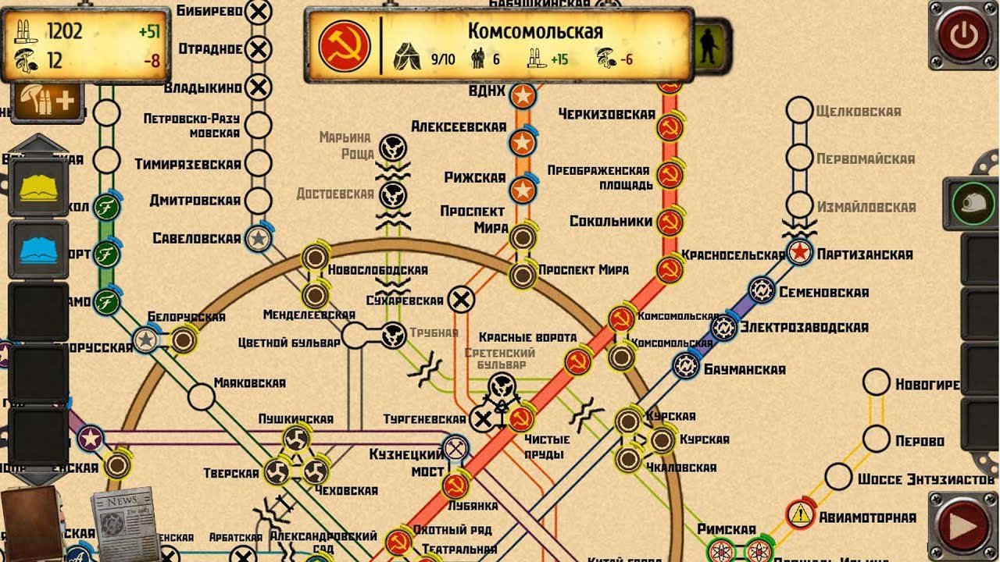

Paralizado por el miedo, Aleksei decide quedarse quieto enfrente del bibliotecario, lo que no sabría es que el miedo esta vez jugaría a su favor. El bibliotecario se acerca lentamente a Aleksei, y al llegar a su lado, este se detiene por un momento, lo que le da a Aleksei la oportunidad de darse cuenta que, a pesar de su intimidante aspecto. Realmente los bibliotecarios son criaturas ciegas. Al quedarse quieto el bibliotecario no se da cuenta de la presencia de Aleksei, por lo que procede ir a otro lado a continuar su búsqueda. Aleksei aprovecha esta oportunidad para escapar junto con el mapa. Aleksei decide regresar a la estación de riga para mostrarle el mapa a todas las personas, mencionando que, de poder ir a dicho lugar, muchos de los problemas de recursos podrían ser solucionados. No obstante, nadie le cree y lo tachan de loco, por lo que decide ir a la estación de riga para investigar por su cuenta. Las personas piensan que es imposible sobrevivir a la biblioteca, por lo que nadie es convencido de acompañarlo en dicha búsqueda.
